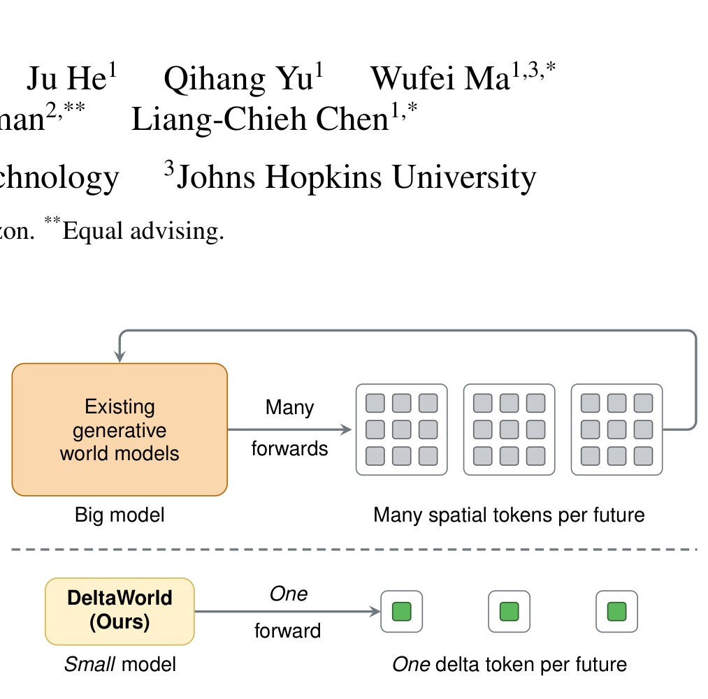
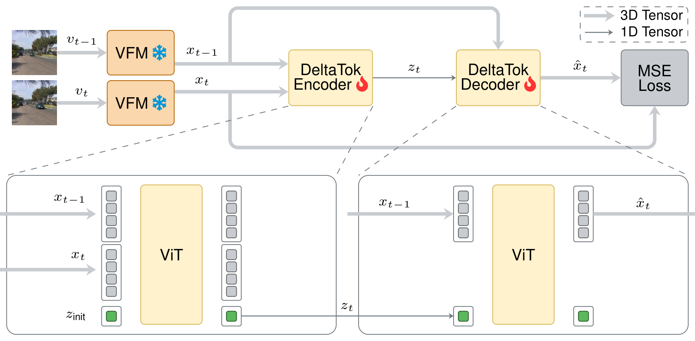
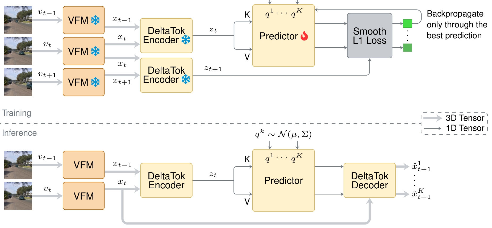
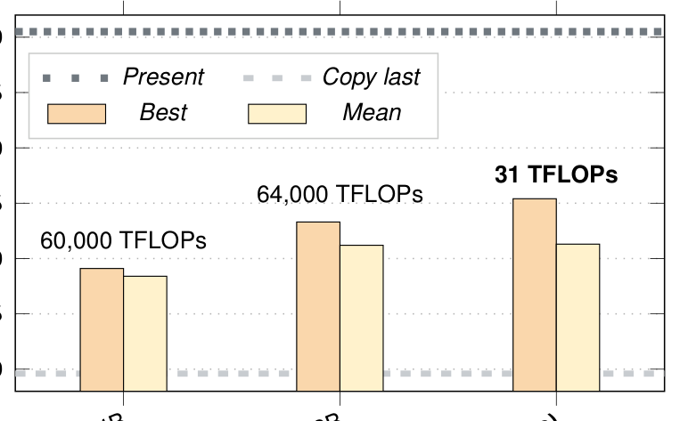
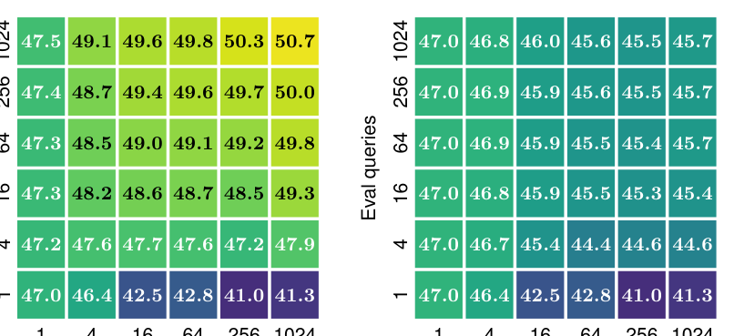
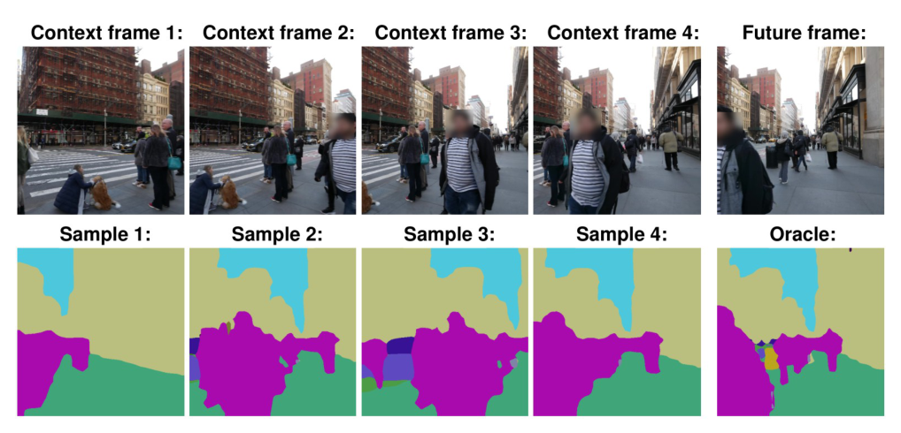

Delta Tokens 深读：一帧只用一个 token，怎样让世界模型既多样又便宜？
导读。Delta Tokens 真正要回答的问题不是“能不能预测下一帧”，而是：未来本就是多样的，可判别式世界模型用回归去预测，必然把多个合法未来平均成一个不真实的“糊”；而生成式又太贵——能不能既给出多样未来、又便宜？它的答案有两步：用 Best-of-Many 让一次前向就吐出多个未来假设，再把相邻帧 VFM 特征的差分压成一个 delta token（一帧一 token，1024× 压缩），让“多假设”变得几乎免费。
{kind=link}

1. 核心问题：判别式世界模型为什么给不了“多样未来”？
自动驾驶等场景要预测未来以避免碰撞，而未来本质多模态——行人可能左转也可能右转。判别式世界模型用回归预测下一帧特征，在不确定时会怎样？
问：为什么 L2/L1 回归对“多个合法未来”必然塌成一个平均？
引导：回归损失的最优解是条件期望——它把所有可能未来按概率加权平均成一个点。
答：在平方损失下，最优预测是条件均值 $\mathbb{E}[\text{future}\mid \text{context}]$。当未来有多个分立模式（左转/右转），均值落在它们“中间”，往往不对应任何真实未来。苏剑林也点过同类现象：VQ-VAE 直接用 L2 重构，因信息平均，模糊是必然的 [archives/9984]。所以判别式世界模型给不了多样、可用的未来集合。生成式（如扩散）能多样，但生成一个样本要多次前向，且作用在整张 $H\times W\times T$ 的 token 网格上，太贵。
Takeaway：问题是“既要多样（别塌成均值）、又要便宜（别多次前向 + 大 token 网格）”。
2. 贡献拆解：作者明确提出了什么？
作者明确提出的贡献：(a) DeltaTok，把相邻两帧的 VFM 特征之差编码成单个连续 delta token的 tokenizer，把视频从 3D 时空表示降到 1D 时间序列（512×512 下 1024× token 缩减）；(b) DeltaWorld，在 delta token 上运行的生成式世界模型，用 Best-of-Many 一次前向高效产出多样未来；(c) 借这种紧凑表示让多假设训练可行——并行生成许多未来、只监督最好的那个。
读者能进一步推断的是：这把“生成式 = 贵”的等式拆开了——贵主要来自“多次前向 × 大 token 网格”，而 BoM 去掉了前者、delta token 去掉了后者。只要目标空间有强时序冗余，“一帧一 token + 单前向多假设”就是一条通用的省钱路线。
3. 数据集与任务：VFM 特征空间里的未来预测
任务是在冻结 VFM（如 DINO）的特征空间里，给定若干上下文帧、预测未来帧的特征，并要求能采样多个合理未来。在特征空间建模可抽离像素级变化，让预测器更紧凑。评测覆盖分割、深度等下游 dense forecasting，以及在 Cityscapes / VSPW / KITTI 等上的短/中时程预测；与判别式 DINO-world 及既有生成式世界模型对比质量与算力。
4. Pipeline：把“帧”压成“变化”
{kind=link}

{kind=link}

问：为什么压“差分”而不是压“整帧”？
答：一个 token 装不下整帧的全部空间内容（容量有限，细节会丢）；但相邻帧高度冗余，它们之间的变化是结构化、低维的（视频编码里的帧间/delta 压缩就是这个道理）。让 tokenizer 以前一帧为条件，单 token 只需编码“如何把上一帧变成这一帧”，所需信息远少于从零重描整个场景。
Takeaway：delta token 用“帧间冗余”换“一帧一 token”，把多假设训练的成本压到可忽略。
5. 模型与方法：Best-of-Many + Delta 压缩
预测器在 VFM 特征空间里、对每个空间位置 $(h,w)$ 独立预测下一帧 patch token：
mode averaging：判别式回归的死穴
式 1 用回归损失训练时，不确定下的最优解是条件均值——把多个分立未来平均成一个常常不真实的预测。这与“L2 重构必然模糊”是同一回事 [archives/9984]：损失只奖励“贴近平均”，不奖励“押中某一个模式”。
Best-of-Many（BoM）：抽 $K$ 个噪声 query 各替换式 1 里的 $q$，得到 $K$ 个未来假设；只监督最接近真值的那一个：
为什么只监督 best 能逼出多样、又有 mode collapse 风险
关键是不平均、只罚最好：一个假设只要“某个 query 押中真未来”就算成功，于是不同 query 可以各自专精到不同模式，一次前向就给出多样未来——避开了均值塌缩，也省去扩散的多次前向。承重假设/代价：每步只有 winner 拿到梯度，其余 $K-1$ 个没有信号；若总是少数 query 获胜，其余会“饿死”，退化成只覆盖少数模式（mode collapse）。多样性因此依赖“足够多的假设在数据上轮流获胜”，这也是为什么要看 best-of-many 的样本缩放曲线来验证。
Delta 压缩：BoM 要并行评估很多假设，若每帧 $H\times W$ 个 token 就太贵。于是先把帧压成单 token（$z_t=g(x_t,z_{\mathrm{init}})$，解码 $\hat x_t=h(x^{\mathrm{init}},z_t)$，重建损失 $\lVert x_t-\hat x_t\rVert^2$）；但单 token 装不下整帧。最终方案是只压帧间差：DeltaTok 让编码器以前一帧为条件——
公式读法
$z_t$ 不再描述整帧，而是描述变化；解码必须同时看 $x_{t-1}$ 与 $z_t$。因为相邻帧冗余大、变化低维，单 token 足以承载，于是视频 3D→1D、token 数 1024× 缩减，BoM 的多假设训练直接在“单 token 空间”里算，无需逐帧解空间特征图。
6. 实验结果：又多样又便宜成立吗？
{kind=link}

判断：两条独立证据合起来支撑主张。算力侧：1024× token 缩减 + 单前向多假设，把生成式世界模型的成本压了几个数量级。多样性侧：best 与 mean 的稳定差距、best-of-many 样本缩放（图 5）、以及多样未来可视化（图 6）说明采样确实覆盖不同模式，而非换皮的均值预测。下面的 dense forecasting 主表把这两点钉死在数字上。
| 模型 | GFLOPs ↓ | VSPW short ↑ | VSPW mid ↑ | City. short ↑ | City. mid ↑ | KITTI short ↓ | KITTI mid ↓ |
|---|---|---|---|---|---|---|---|
| Copy last（下界） | — | 51.2 | 44.3 | 53.5 | 39.6 | 3.76 | 4.86 |
| DINO-World [3]（判别式单点） | 5.8×10³ | 54.0 | 47.9 | 62.0 | 49.8 | 3.16 | 4.07 |
| Cosmos-4B [1] | 6.0×10⁷ | 51.1 (49.7) | 47.0 (44.5) | 55.1 (54.9) | 49.1 (48.4) | 3.82 (3.75) | 4.08 (4.14) |
| Cosmos-12B [1] | 6.4×10⁷ | 51.7 (50.7) | 47.7 (45.5) | 55.3 (56.0) | 53.3 (51.2) | 3.72 (3.71) | 4.01 (4.14) |
| DeltaWorld（本文） | 3.1×10⁴ | 55.4 (53.7) | 50.1 (46.7) | 65.8 (63.9) | 55.4 (51.3) | 3.00 (3.17) | 3.88 (4.17) |
| Present（上界） | — | 58.4 | 58.4 | 70.5 | 70.5 | 2.79 | 2.79 |
读表的三条线：① 算力——Cosmos 的 6.0–6.4×10⁷ GFLOPs（还各自挂了一个 7B 扩散解码器、FLOPs 由它主导）比 DeltaWorld 的 3.1×10⁴ 高约 2,000×，DeltaWorld 却在几乎所有指标上 best 全面超过 Cosmos（VSPW short 55.4 vs 51.7、Cityscapes short 65.8 vs 55.3、KITTI short 3.00 vs 3.72），mean 也大多更好。② 对判别式——相对 DINO-World 的单点预测，DeltaWorld 的 best 大幅领先（Cityscapes short 65.8 vs 62.0），mean 在 Cityscapes 略好、在 VSPW/KITTI 略逊，说明多采样确实“捞到了”单点回归拿不到的合理模式。③ best–mean 间隔——DeltaWorld 的 best 与 mean 之差（如 Cityscapes short 65.8 vs 63.9、VSPW mid 50.1 vs 46.7）一致大于 Cosmos，正是“样本更有意义的多样性”的量化证据。
{kind=link}

{kind=link}

问：best 高于 mean，会不会只是“多采几次总有一个碰巧好”？
答：这正是要点。若模型塌成均值，多采样不会让 best 明显变好；而 best 随样本数稳定上升（图 5）说明不同样本落在不同合理模式上——是真多样，不是噪声。论文也强调这是判别式单点预测拿不到的。
Takeaway：主张成立的边界是“VFM 特征空间、强时序冗余的视频未来预测”，证据覆盖算力与多样性两面。
7. 消融：每个设计都必要吗？
这篇的消融最漂亮的地方，是把整个方法拆成四步“逐步搭建”——从判别式基线一路加到 DeltaWorld，每一步只动一个设计，于是每个组件的代价与收益都一目了然（Cityscapes / VSPW mid-horizon ≈0.6 s，256×256 crop，K=16 训练、best-of-20 评测，括号内为 mean）。
| 步骤 | GFLOPs ↓ | Time ↓ | Mem ↓ | VSPW best (mean) ↑ | Cityscapes best (mean) ↑ |
|---|---|---|---|---|---|
| (0) 判别式基线（DINO-World） | 959 | 1.0× | 1.0× | 44.8 | 45.4 |
| (1) + Best-of-Many 训练 | 12013 | 4.9× | 1.0× | 47.0 (39.4) | 46.8 (31.1) |
| (2) + 整帧压成单 token | 631 | 0.4× | 0.2× | 45.7 (40.3) | 42.7 (35.5) |
| (3) + delta 压差分（DeltaWorld） | 672 | 0.5× | 0.2× | 46.8 (44.4) | 48.7 (45.5) |
逐行读出三个判断：① BoM 带来多样、也带来代价——步（1）把 best 顶到 47.0/46.8，但 mean 暴跌（Cityscapes 45.4→31.1、VSPW 44.8→39.4，许多样本塌成“整帧一个语义类”），训练时间还涨 ≈4.9×。光有 BoM 是“贵且 mean 崩”。② 压整帧救了成本、没救精度——步（2）把 GFLOPs 从 12013 砍到 631（比步（1）快一个数量级、显存省 5×），但单 token 装不下整帧，best/mean 都掉到 45.7/42.7。③ 压 delta 才两全——步（3）在几乎相同的成本（672 GFLOPs、0.5× time、0.2× mem）下，best 反超步（1）的无压缩 BoM（Cityscapes +1.9：48.7 vs 46.8，VSPW 仅差 0.2：46.8 vs 47.0）。mean 也直接恢复到判别式基线水平（VSPW 44.4 vs 44.8、Cityscapes 45.5 vs 45.4）。mean 的回升来自 delta 的先验——“预测无变化”就等于保留上一帧，不会塌成退化预测。预测器在生成 20 样本时只占总推理 FLOPs 的 0.5%（步（1）则占 97%）。
这张表要支撑的结论是：两条假设各自经过独立检验。压整帧的单 token 精度受限、压 delta 才够用（步 2 vs 步 3）对应第 5 节“单 token 装不下整帧、却装得下低维帧间变化”；去掉 BoM 就只剩均值（步 0 vs 步 1）对应“回归塌缩到条件均值”。图 5 进一步量化了 best-of-many 随 $K$ 的缩放：best 随评测 query 数单调上升且不饱和，mean 在 $K{=}64$ 之后稳定——更多多样性不以牺牲均值质量为代价。
问：消融与机理是否自洽？
答：自洽。“压整帧的单 token 精度受限、压 delta 才够用”正对应第 5 节“单 token 装不下整帧、但装得下低维帧间变化”；“去掉 BoM 就只剩均值”对应“回归塌缩到条件均值”。理论的两条假设都在消融里被独立检验。
Takeaway：关键不是“用不用生成式”，而是“怎样的生成式才能既多样又付得起”。
8. 局限与复现门槛：什么时候要谨慎？
| 边界 | 论文/方法信息 | 读者应如何理解 |
|---|---|---|
| delta 低维假设 | 单 token 只编码帧间变化 | 镜头切换/剧烈运动时变化不再低维，一个 token 可能不够 |
| BoM mode collapse | 只监督 winner，其余假设无梯度 | 若少数 query 长期获胜，多样性会退化；需足够假设与覆盖 |
| 依赖 VFM | 在冻结 VFM 特征空间建模 | 预测的“未来”是特征级的；像素级保真受 VFM 与解码限制 |
| 特征空间评测 | 主评测在 VFM 特征/下游任务 | “多样且合理”以下游指标衡量，不等同像素级视频生成 |
| 适用区间 | 强项在强时序冗余视频 | 冗余低的场景压缩收益与多样性都会打折 |
问：这篇论文最容易被过度宣传成什么？
答：容易被说成“一个 token 就能生成视频未来”。更严谨的说法是：在 VFM 特征空间、利用强帧间冗余，用 Best-of-Many 单前向出多样未来、用 delta token 把成本压几个数量级，从而让生成式世界模型变得可负担。
Takeaway：强项是“多样 + 单前向 + 极致压缩”；边界是 delta 低维假设、BoM 塌缩风险与特征级评测。
结语：几点学术判断
一句话总结：Delta Tokens 把“生成式世界模型 = 贵”的成本拆成两块分别击破：Best-of-Many 去掉“多次前向”，delta token 去掉“大 token 网格”，于是多样未来变得便宜可训。
- 判别式回归在不确定下塌到条件均值（mode averaging），给不了多样未来。
- Best-of-Many 只罚最优假设，让不同 query 专精不同模式、单前向出多样——但只 best 拿梯度，有 mode collapse 风险。
- delta token 利用帧间冗余把一帧压成一个“变化 token”，1024× 缩减让多假设训练几乎免费。
资料来源与图像说明
- Tommie Kerssies, Gabriele Berton, Ju He, Qihang Yu, Wufei Ma, Daan de Geus, Gijs Dubbelman, Liang-Chieh Chen. A Frame is Worth One Token: Efficient Generative World Modeling with Delta Tokens. CVPR 2026 / arXiv:2604.04913（Amazon）。
- 本文公式、表格与实验数字以 arXiv PDF 为准；“L2 回归/重构因平均而模糊”的视角参考苏剑林 [archives/9984]；Best-of-Many / winner-take-all 为既有多假设学习目标，非本文独有。
- 图像说明：所有正文图为本地 PNG，来自 arXiv PDF 的高 DPI 页面裁切（图 1/2/3/4），路径位于
assets/figures/deltatok/。